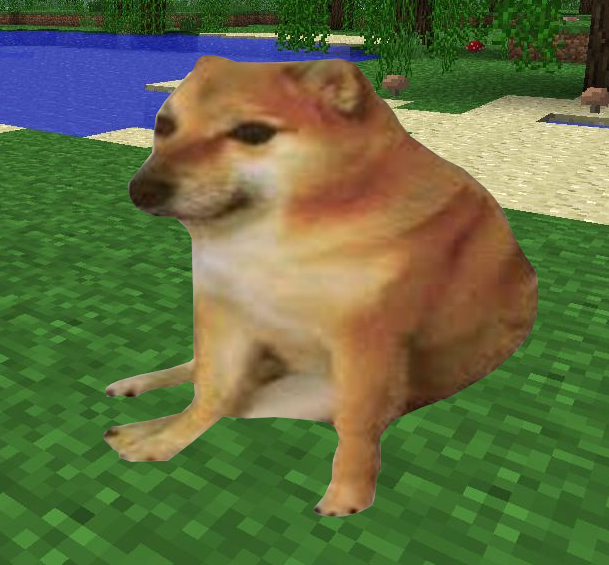
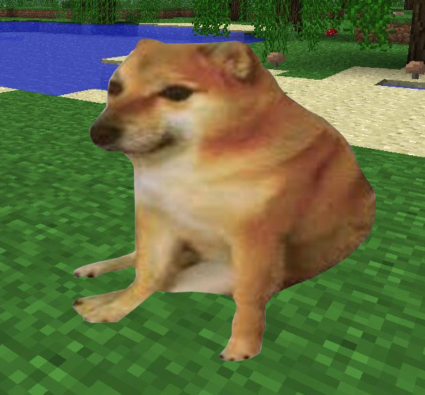

Cześć!
Jestem Marek, mam 13 lat. Od dawna interesuję się linuxem. Stworzyłem
tę stronę aby dzielić się moimi
przemyśleniami na temat różnych
dystrybucji oraz pomagać początkującym.

tę stronę aby dzielić się moimi
przemyśleniami na temat różnych
dystrybucji oraz pomagać początkującym.

Co u mnie znajdziesz?
• Recenzje dystrybucji linuxa,
• Recenzje aplikacji linuxowych,
• Poradniki,
• Nowości ze świata linuxa ( czasem ),
• Gry natywne lub włączone przy pomocy Protona/Wine.
• Recenzje aplikacji linuxowych,
• Poradniki,
• Nowości ze świata linuxa ( czasem ),
• Gry natywne lub włączone przy pomocy Protona/Wine.
Aktualności:
Póki co, nie ma aktualności,
strona się jeszcze rozwija =D
strona się jeszcze rozwija =D